Masonry & Stonework in Steamboat Springs
Stone fireplaces, chimneys, veneer, flagstone patios, and retaining walls — set by a master mason, built to survive freeze-thaw, and detailed so water never gets a foothold. A written scope before we build, a photo update every working day, and the owner on every job.
Call or text 970-393-6239Photos of your space welcome · 30-minute response, Mon–Fri
Serving Steamboat Springs and the Yampa Valley · Written proposal within 48 hours of your walkthrough · Owner-run, licensed and insured in Colorado.
What we build in stone
Masonry is one trade with a dozen faces. Here's what we build in Steamboat Springs and across the Yampa Valley — and for each one, the detail that decides whether it lasts thirty winters or starts moving in three.
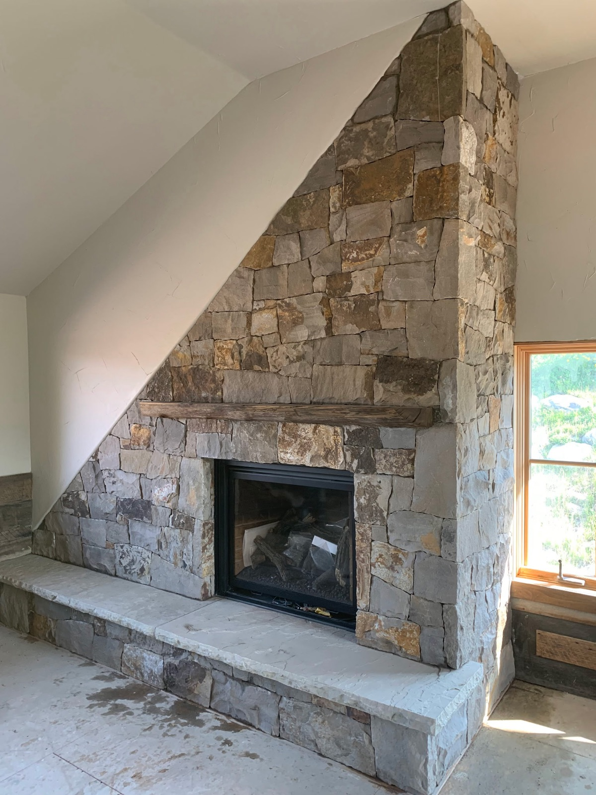
🔥 Fireplaces & hearths
Full-height stone fireplaces, refacing an existing surround, raised hearths, and mantel installs — the centerpiece of a mountain great room, inside where you live with it every day.
What matters: clearances and venting follow the firebox listing and code, and the stone is tied to the structure — not just stuck to drywall.
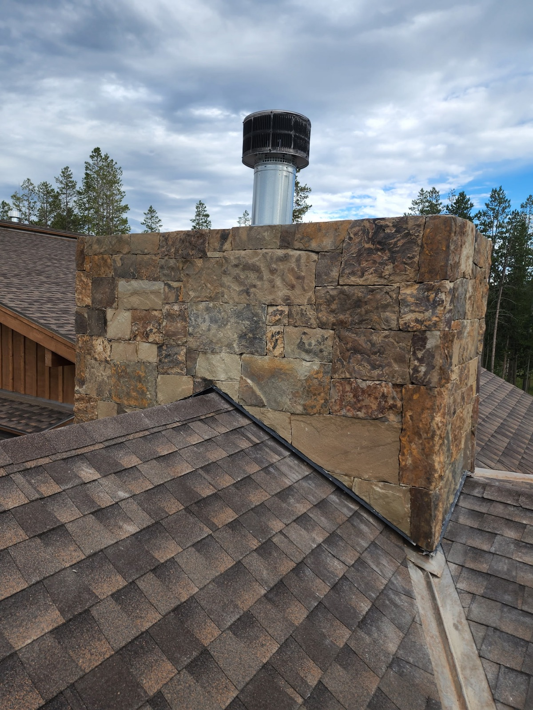
🏔️ Chimneys & chases
Stone chimney chases, crowns, and caps — the most exposed masonry on the house, taking sun, snow, and wind all year.
What matters: the crown sheds water and the flashing where stone meets roof is done right. Most chimney leaks are flashing leaks wearing a stone disguise.
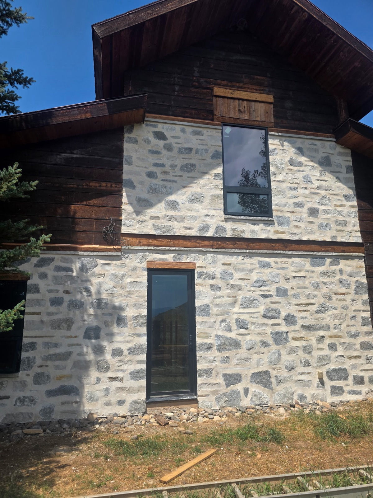
🧱 Stone veneer
Natural and manufactured stone veneer — exterior facades, skirting and wainscot, entry surrounds, and interior accent walls.
What matters: what's behind the stone. A drainage plane and weeps let any water that gets in get back out, so freeze-thaw never pries the work off the wall.
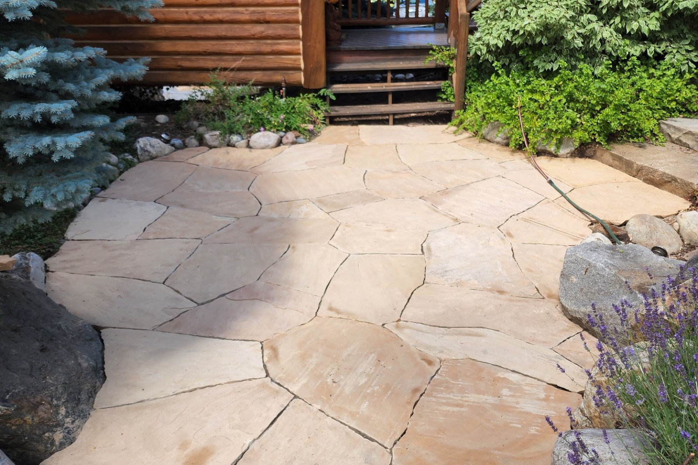
🪨 Flagstone patios & walkways
Flagstone patios, entry walks, garden paths, and stone steps — the outdoor rooms you use all summer and the paths you shovel all winter.
What matters: the base. Compacted, drained, and pitched so meltwater runs off instead of sitting under the stone, freezing, and heaving it.
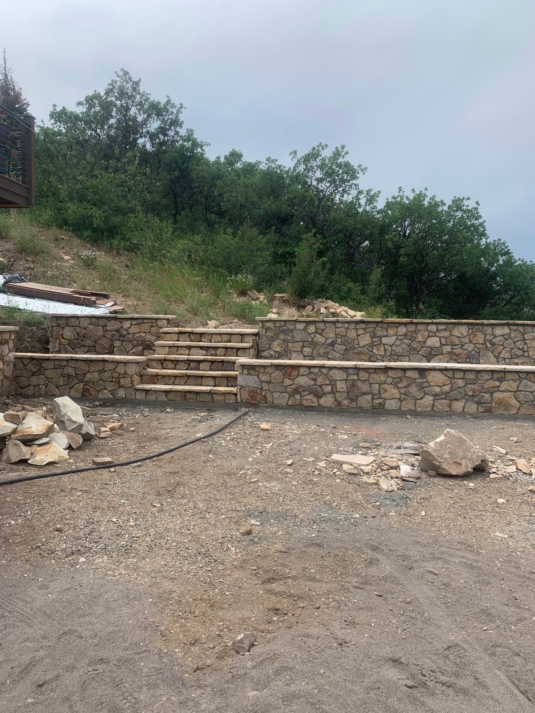
⛰️ Retaining walls & stairs
Structural and garden retaining walls, terraced slopes, and stone stairs — Steamboat is a town built on hillsides, and stone is how a slope becomes a yard.
What matters: drainage behind the wall. Trapped water and frost are what push walls over; weep and drain it and the wall stands for decades.
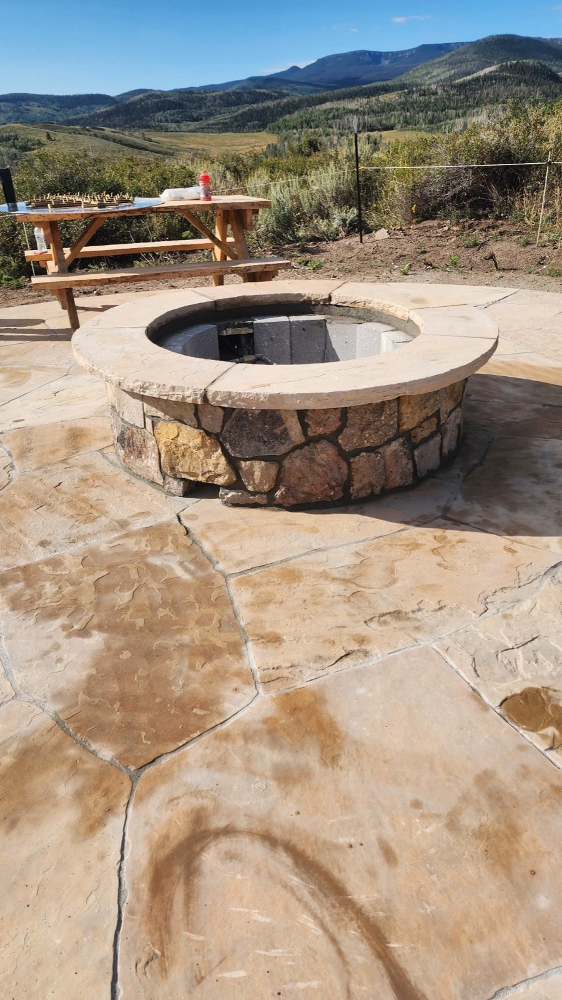
✨ Fire pits & outdoor features
Stone fire pits, seat walls, column bases, entry pillars and gate piers, address monuments, and caps — the features that finish an outdoor space.
What matters: caps and joints that shed water, and materials rated for heat where there's flame.
Stone is one layer of the whole exterior — see everything we remodel outside in Exterior Remodels, including siding and decks built for the same winters.
What drives the cost — and how we keep you in control
Most of a masonry number comes down to a few things: the stone itself (natural full-bed stone, thin natural veneer, and manufactured veneer sit at different price points), square footage and height (tall work needs staging and more time), what's behind and beneath (structural backing, footings, base prep, and drainage are real work you don't see at the end), and access — stone is heavy, and a tight or steep site changes how it moves. We walk all of it with you before you commit, put it in a written line-item scope, and the price changes only by a change order you approve.
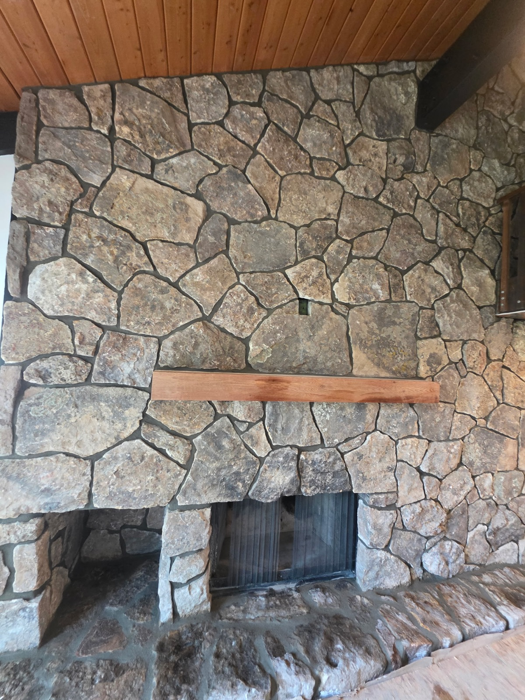
Stone that survives Steamboat
At 6,700 feet, masonry is a water-management trade. The stone is forever — the details around it decide everything:
How Elk Ridge builds in stone
Our stonework is led by a master mason with decades of it in these mountains — the fireplaces, chimneys, patios, and walls on this page are his craft. Elk Ridge wraps that craft in the way we run every job: a written line-item scope before work starts, the owner on the job, a photo and status update every working day plus a short written weekly recap, and the work backed by the full Elk Ridge Promise and a written 2-year workmanship warranty, with final payment only after you sign off.
Questions homeowners ask us
Is real stone worth it over manufactured veneer?
Why does masonry fail in the mountains?
Can you build or reface a fireplace?
Do stone patios and walkways survive our winters?
Do retaining walls need engineering or a permit?
Does stone help in a wildfire zone?
How will I know what's happening on my project?
What does the warranty cover?
Masonry you can see
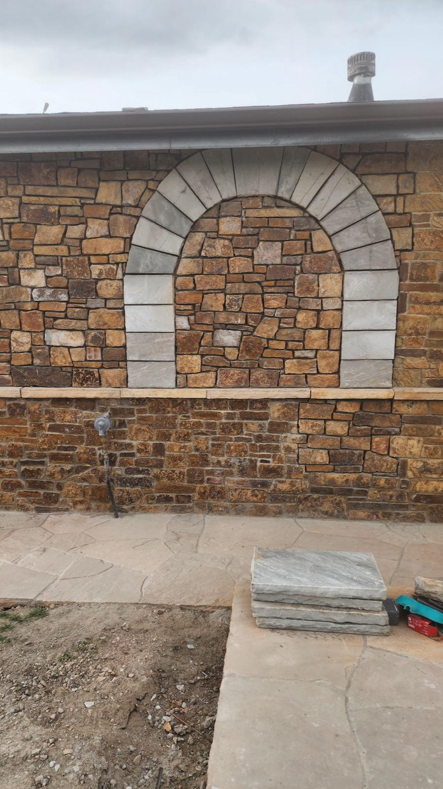
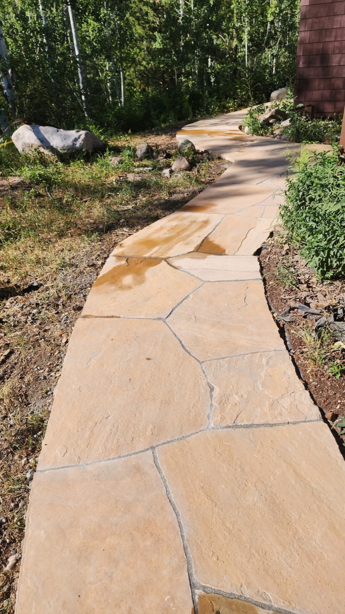
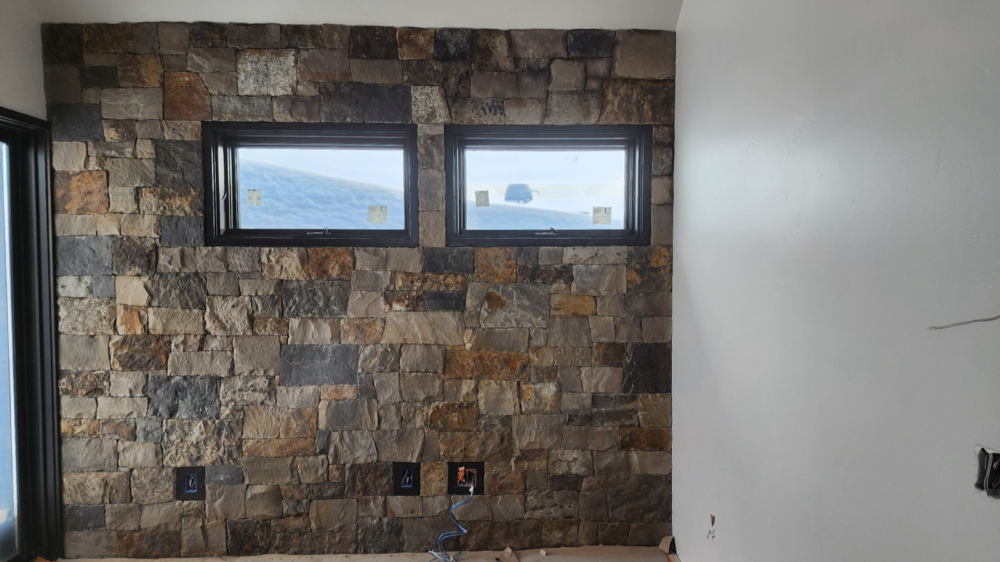
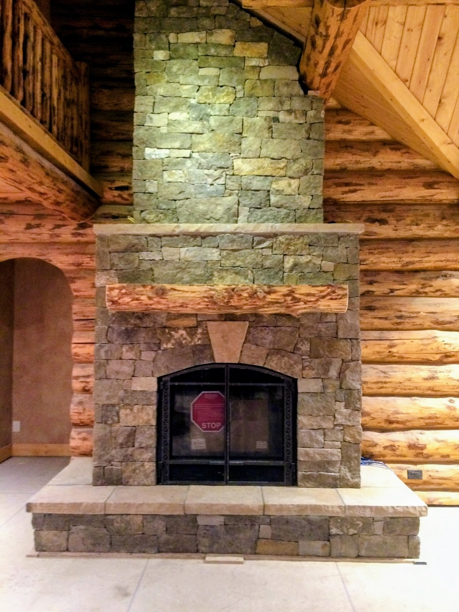
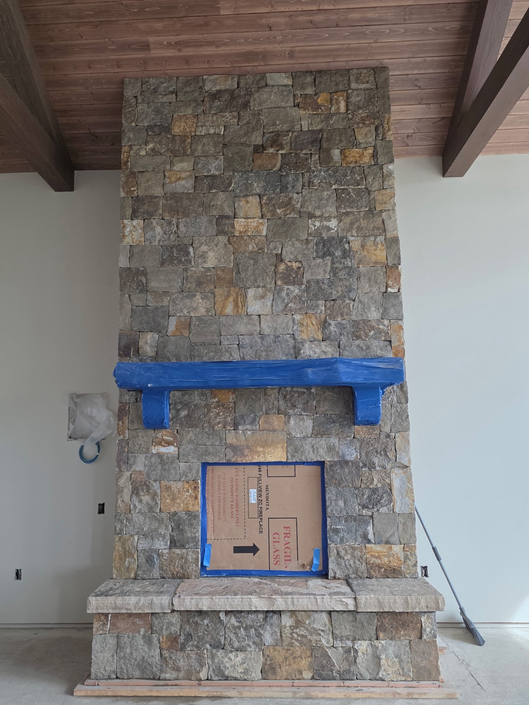
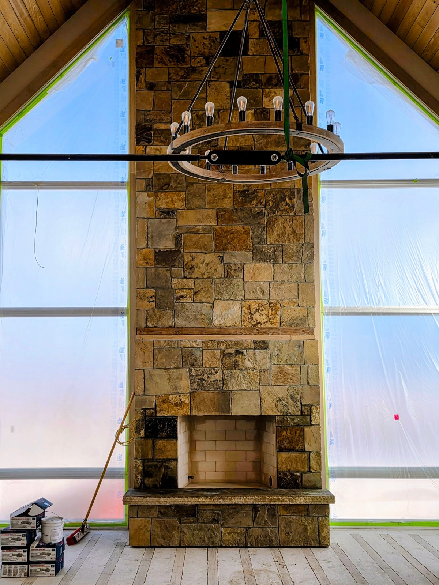
Every photo on this page is real stonework by the master mason who leads our masonry projects, shown with his permission — no stock images, no AI renders. As Elk Ridge masonry projects complete with homeowner consent, full project sets will appear here.
Stone done right the first time
970-393-6239Written proposal within 48 hours of your walkthrough. Calls and texts answered Monday–Friday, 7am–5pm MT — photos welcome. Messages returned the same business day. You reach us directly — no call center, no obligation.